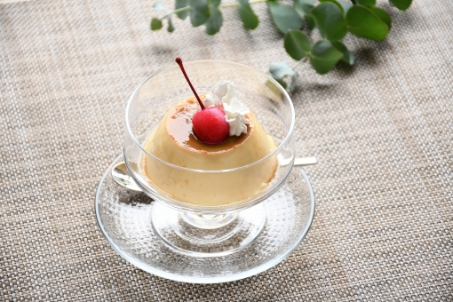
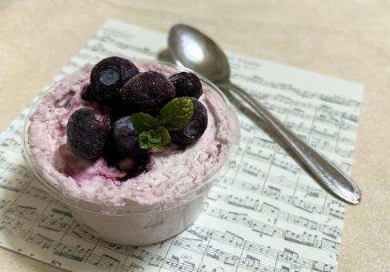
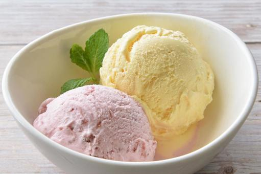
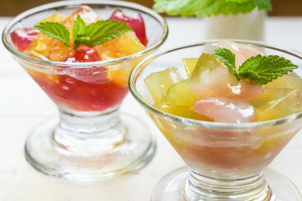

プリン
プリンは牛乳や卵を混ぜて蒸して固めたお菓子です。
ゼラチンを使う場合もありプルンとした食感がとてもおいしいです。
材料
- 卵 - 3個
- 砂糖 - 60g
- 牛乳 - 500ml
- バニラエッセンス - 数滴
- カラメル用砂糖 - 50g
- 水 - 大さじ2
作り方
- カラメルを作る: 小鍋にカラメル用砂糖と水を入れ、中火で煮詰める。茶色くなったら耐熱容器に流し入れる。
- 卵をボウルに割り入れ、砂糖を加えて混ぜる。
- 牛乳を鍋で温め、沸騰直前で火を止める。
- 温めた牛乳を少しずつ卵液に加えながら混ぜる。
- バニラエッセンスを加えて混ぜる。
- 混ぜた液をこし器でこしながら、カラメルを入れた耐熱容器に注ぐ。
- オーブンを150℃に予熱する。
- 天板に湯を張り、耐熱容器を並べる。
- オーブンで40〜50分焼く。
- 焼き上がったら粗熱を取り、冷蔵庫で冷やす。
- 冷やした後、容器から取り出し、お皿に盛り付ける。
ムース
ムースはメレンゲや生クリームを固めたお菓子です。
フランス語で「泡」という意味がありふわふわとした食感が特徴的です。
材料
- 生クリーム - 200ml
- 砂糖 - 50g
- ゼラチン - 5g
- 水 - 大さじ3
- バニラエッセンス - 数滴
- 好みのフルーツピューレ - 200g
作り方
- ゼラチンを水にふやかしておく。
- 生クリームをボウルに入れ、砂糖を加えて8分立てに泡立てる。
- フルーツピューレを別のボウルに入れ、ふやかしたゼラチンを加えて混ぜる。
- フルーツピューレと泡立てた生クリームを合わせ、バニラエッセンスを加える。
- よく混ぜ合わせたら、カップに分け入れる。
- 冷蔵庫で2時間以上冷やし固める。
- 冷やし固めたムースをお皿に盛り付け、好みでフルーツやミントを飾る。
アイスクリーム
アイスクリームは牛乳や卵を混ぜて冷凍庫で冷やし固めたお菓子です。
様々なフレーバーがありひんやりと冷たいので暑い夏にぴったりです。
材料
- 生クリーム - 200ml
- 牛乳 - 200ml
- 砂糖 - 80g
- 卵黄 - 2個
- バニラエッセンス - 数滴
作り方
- ボウルに卵黄を入れ、砂糖を加えて白っぽくなるまで混ぜる。
- 鍋に牛乳を入れ、中火で温める。沸騰直前で火を止める。
- 温めた牛乳を少しずつ卵黄のボウルに加えながら混ぜる。
- 混ぜた液を鍋に戻し、弱火でとろみがつくまで加熱する。
- 火から下ろし、バニラエッセンスを加えて混ぜる。
- 生クリームを別のボウルで8分立てに泡立てる。
- 冷ました牛乳と卵の液を泡立てた生クリームに加え、さっくりと混ぜる。
- 混ぜた液を容器に移し、冷凍庫で冷やす。
- 途中で数回混ぜると、滑らかなアイスクリームになる。
- 完全に固まったら、器に盛り付けて完成。
ゼリー
ゼリーはジュースなどをゼラチンで固めたお菓子です。
家庭でも簡単に作ることができプルプルの食感を楽しむことができます。
材料
- 好みのジュース - 500ml
- ゼラチン - 10g
- 砂糖 - 50g（お好みで調整）
- 水 - 大さじ4
作り方
- ゼラチンを水にふやかしておく。
- ジュースを鍋に入れ、砂糖を加えて中火で温める。砂糖が溶けたら火を止める。
- ふやかしたゼラチンを加え、完全に溶かす。
- ゼラチンが溶けたら、ジュースをこし器でこしながら容器に移す。
- 容器を冷蔵庫に入れ、2時間以上冷やし固める。
- 固まったら、お皿に取り出して盛り付ける。お好みでフルーツやホイップクリームを添えると良い。